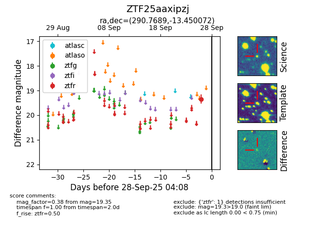

FINK: ZTF25aaxipzj
Lasair: ZTF25aaxipzj
ALeRCE: ZTF25aaxipzj
ZTF25aaxipzj (ztf,fink)
equatorial (ra, dec) = (290.7689,-13.45007)
galactic (l, b) = (24.3148,-13.01293)

last ztfr=19.35
1 ztfr detections